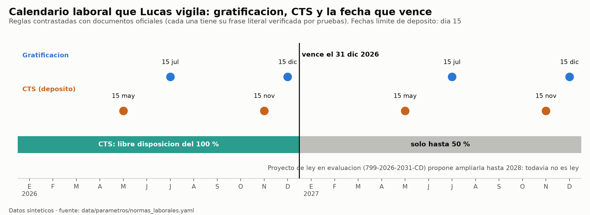
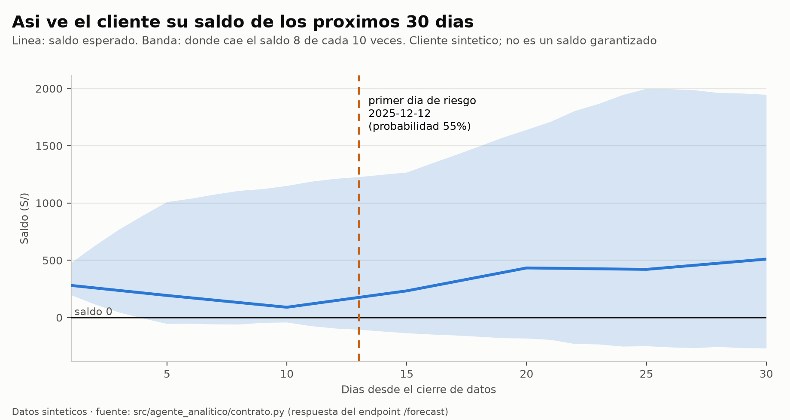

¿Qué pasa cuando no sabes si te alcanzará la plata hasta tu próximo ingreso?
Tener cuenta no es saber si llegas a fin de mes
El problema
Nadie les avisa a tiempo si el saldo alcanza hasta el próximo ingreso, ni qué cambio concreto los saca del rojo.
La decisión que mejoramos
¿Cuánto puedo gastar o ahorrar este mes sin quedarme en rojo antes de mi próximo ingreso?
Para quién
Trabajadores dependientes e independientes del sector privado en Perú.
Así se orquesta todo alrededor de la persona
Cada mensaje toma un solo camino
Elige un mensaje y mira por qué nodos del agente pasa. Toca un nodo para ver qué hace.
Cada capa corta un riesgo distinto
Cada modelo le gana a una alternativa sencilla
Lucas se adelanta a lo que viene
Si la API falla, Lucas usa la caché, luego el último valor y luego una serie grabada. Un dato viejo no se presenta como actual.
La libre disposición del 100 % de la CTS vence el 31 de diciembre de 2026 (Ley 32322). El proyecto que la extiende a 2028 sigue en evaluación y Lucas no lo trata como ley.

Cada ingreso o gasto que se registra actualiza el saldo y el riesgo al instante, sin duplicados.
Lucas avisa lo más urgente primero, una sola vez y hasta tres avisos por semana.
Cada aviso dice por qué, con qué supuestos y con qué confianza.
